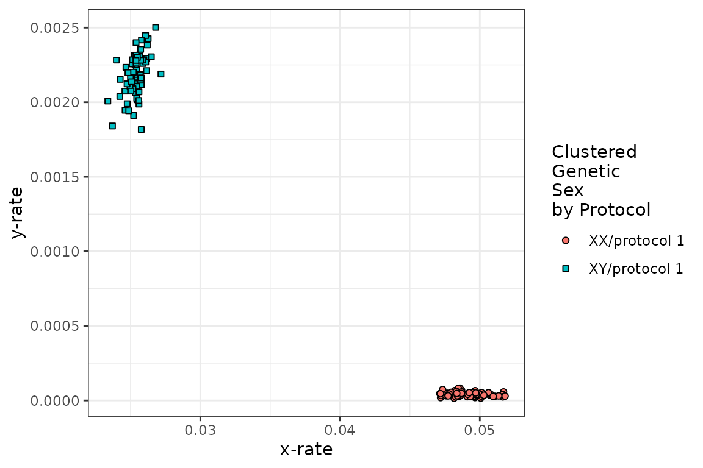
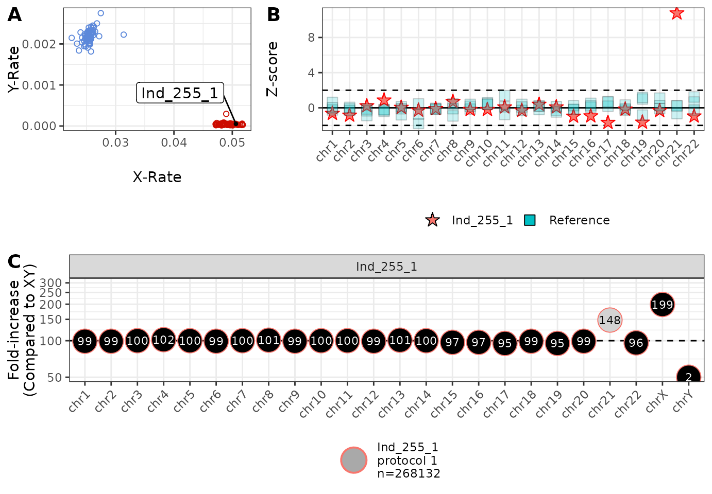
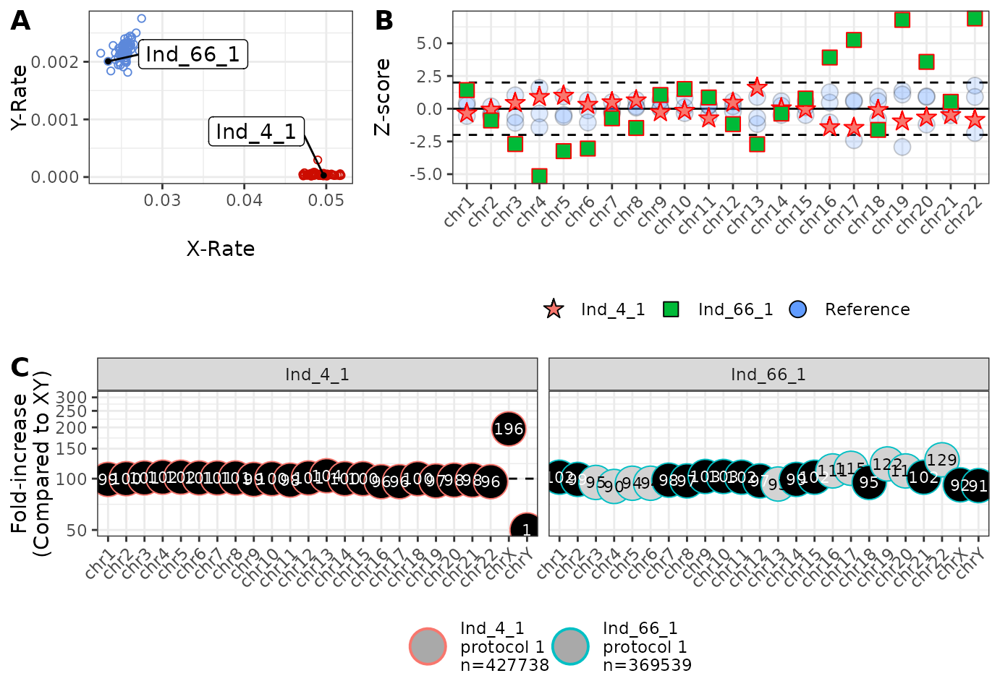

Example ChASM Analysis Using Example Data
example_analysis.Rmd
library(RChASM)
library(magrittr)
library(mclust)
#> Package 'mclust' version 6.1.2
#> Type 'citation("mclust")' for citing this R package in publications.Introduction
RChASM is a method for identifying chromosomal aneuploidies in studies where coverage is very low (0.006X-0.0014X), such as for ancient DNA. RChASM does this by modeling the proportion of reads mapping to each chromosome, using a Dirichlet-multinomial distribution, estimated from a user-provided training data set. This means that RChASM is only applicable to studies with at least 23 samples.
The Dirichlet-multinomial is a Bayesian combination of the Dirichlet distribution and the Multinomial distribution. The combination of these two distributions do the following things:
- Multinomial distribution: allows us to account for variability in the observed proportions due simply to sampling depth, measured here by the total number of reads that mapped to the reference distribution, for a given sample.
- Dirichlet distribution: allows us to model the variability in the observed proportions due to differences in sample degradation and data generation protocols.
We allow for different data-generation protocols (called simply “protocol” from here on), defined here as the combination of sequencing types (e.g. shotgun or 1240k capture) and library preparation/architecture (e.g. single or double strand). However this can be ignored if all data comes from the same overall protocol. The analysis starts with processing your bam files. It is important to remove duplicates, and to include all other sensible methods of data quality control, and that this is consistent across all data with the same protocol.
We provide a bash script to easily process your bam files. Please note that the script works identically regardless of the choice of reference genome, but if you choose to process your bam files manually, note the required column names below. For steps on how to use the pre-processing script, please see the final section at the end of this vignette titled “Pre-processing your data using our script”. However, any data set can be used as long as: the first column gives the sample IDs, and there are read counts for each chromosome (excluding MT) with column headers “chr1”, “chr2”,..,“chr22” and “X” and “Y”.
For this example analysis we are simply using the inbuilt example data set, which is loaded from the RChASM package using the data() function.
data(example_data)Running the analysis using runChASM()
At this stage, if you have “mixed data” that uses different data generation protocols (called protocol from here forward), you can include this in a column titled “protocol”. If this is not included, the function will assume each row represents data using the same sequencing protocol (and assigns a column with the entry “default”). Essentially, RChASM treats the different protocols as separate analyses anyway.
# An example of data that RChASM analyses (omitting columns for chromosomes 3 to 20).
example_data %>%
dplyr::select(sample, protocol, chr1, chr2, chr21, chr22, X, Y) %>%
head()
#> # A tibble: 6 × 8
#> sample protocol chr1 chr2 chr21 chr22 X Y
#> <chr> <chr> <dbl> <dbl> <dbl> <dbl> <dbl> <dbl>
#> 1 Ind_1_1 Protocol 1 7471 7955 1151 1209 4725 5
#> 2 Ind_1_2 Protocol 1 4248 4206 631 760 2382 2
#> 3 Ind_3_1 Protocol 1 9839 9935 1487 1779 2968 235
#> 4 Ind_4_1 Protocol 1 34248 35719 5193 5707 21254 12
#> 5 Ind_5_1 Protocol 1 2306 2357 356 397 1484 1
#> 6 Ind_6_1 Protocol 1 58317 59471 8866 10206 17742 1576Once you have the input data read into R as a data frame/tibble, ChASM is run by one command: runChASM(). The user must decide on a few parameters, but all of these have default values that have been calculated using a large-scale simulation study which can be used. Nevertheless, here are the parameters that can be adjusted.
- minSamplesPerProtocol: this is the minimum number of samples required to calculate the required Dirichlet distribution parameters. We encourage a minimum of at least 30 samples (per protocol), although a functional minimum of 23 exists for estimating the parameters of the Dirichlet prior distribution.
- min_reads: the minimum number of reads that a sample can have to be used in estimating the Dirichlet parameters. We urge caution calling karyotypes for samples with less than 60,000 reads, and so it makes sense to use this as a lower threshold for estimating the prior distribution for the read counts.
- max_reads: the maximum number of reads that a sample can have to be used in estimating the Dirichlet parameters. Sometimes the read counts of very high-coverage samples behave strangely, likely due to the sample reaching complexity, and it is made worse by high-coverage samples with poor preservation.
- p_contamination: the proportion of samples in your study that you expect would return significant contamination estimates. This can be found by simply running your favourite contamination estimator on your data set, and seeing what this proportion is (although we consider XX+XY contamination only here, a conservative estimate from all contamination will perform well).
- show_plot: a TRUE/FALSE setting that decides if you see the x-rate vs y-rate clusters used to train the sex chromosomal aneuploidy prior distribution. We encourage user to make sure that you see two reasonable clusters, representing XX and XY. If not, you may need to adjust min_reads and max_reads, or you may have too few samples for variability in the samples (although this is unlikely as this distribution is only three-dimensional).
- printMissingIDs: a TRUE/FALSE setting that decides if you see which samples are missing in the merge of the two aneuploidy types: sex chromosomal and autosomal, or just how many.
RChASM is run on your data (example_data here) using one command, runChASM(), as follows. This function runs two separate analyses, one each for the sex chromosomal and the autosomal aneuploidies, that processes the data, fits the prior distribution, and then calls the karyotypes. It then merges these analyses into one result, and calculates the required Z-scores.
example_calls <- runChASM(rawReadCountsIn = example_data)
runChASM() return a list with the merged results (karyotypes), the two separate autosomal (karyotypes.auto) and sex chromosomal aneuploidies (karyotypes.sca), the per-protocol parameters of the Dirichlet distributions for the autosomes (dirichlet.auto) and the sex chromosomes (dirichlet.sca), the Z-scores (z.scores), as well as the settings used for the analysis (minSamplesPerProtocol, min_reads, max_reads and p_contamination). You need never look at this list of output as we have functions to explore your results!
We can also see from the (above) diagnostic plot that there are two sensible clusters for XX and XY in our data!
Interpreting results and producing diagnostic plots
Uncommon aneuploidies - analysis overview
Now that we have run RChASM, we can see if we have any samples with uncommon karyotypes. We do this by passing the RChASM results to the summary_calls() function. This function simply returns any individuals that do not have a karyotype of XX or XY, or has a karyotype of trisomy 13, 18 or 21. You can choose to further for samples with a lower bound on the number of observed reads (again we suggest 60,000 reads), or the maximum posterior probability (we suggest 0.95 in general, and 0.99 for uncommon karyotypes). You can also omit samples that are “unusual” (i.e., that have a significant chi-squared goodness-of-fit statistic). However, as this statistic can be quite sensitive, we encourage users to inspect this statistic in context with the z-score plot (see panel B in the diagnostic plots ahead).
summary_calls(inChASM = example_calls, minTotal = 6e4, minPosterior = 0.95)
#> # A tibble: 3 × 10
#> sample unusual flags autosomal_call sca_call C_call autosomal_total sca_total
#> <chr> <lgl> <int> <chr> <chr> <chr> <dbl> <dbl>
#> 1 Ind_71… TRUE 4 No Aneuploidy XXX No Si… 70688 76444
#> 2 Ind_18… FALSE 1 No Aneuploidy XXX No Si… 209933 225713
#> 3 Ind_25… FALSE 0 Trisomy 21 XX No Si… 254544 268132
#> # ℹ 2 more variables: automsomal_maxP <dbl>, sca_maxP <dbl>We can also simply print the first 10 lines (this value can be changed, or set to Inf to print all lines) of the merged karyotype calls to the screen using the printChASM() function
printChASM(inChASM = example_calls, lines = 10)
#> # A tibble: 222 × 11
#> sample protocol unusual flags autosomal_call sca_call C_call autosomal_total
#> <chr> <chr> <lgl> <int> <chr> <chr> <chr> <dbl>
#> 1 Ind_1_1 protoco… TRUE 3 No Aneuploidy XX No Si… 89539
#> 2 Ind_1_2 protoco… FALSE 1 No Aneuploidy XX No Si… 48376
#> 3 Ind_3_1 protoco… TRUE 2 No Aneuploidy XY No Si… 113335
#> 4 Ind_4_1 protoco… FALSE 0 No Aneuploidy XX No Si… 406472
#> 5 Ind_5_1 protoco… FALSE 0 No Aneuploidy XX No Si… 27731
#> 6 Ind_6_1 protoco… FALSE 0 No Aneuploidy XY No Si… 681256
#> 7 Ind_7_2 protoco… FALSE 0 No Aneuploidy XY No Si… 130928
#> 8 Ind_9_1 protoco… FALSE 0 No Aneuploidy XX No Si… 425906
#> 9 Ind_15… protoco… FALSE 1 No Aneuploidy XX No Si… 3364
#> 10 Ind_17… protoco… FALSE 1 No Aneuploidy XY No Si… 11699
#> # ℹ 212 more rows
#> # ℹ 3 more variables: sca_total <dbl>, automsomal_maxP <dbl>, sca_maxP <dbl>and the entire result can be saved as a TSV (to be opened in Excel say) using the saveChASM() function,
saveChASM(inChASM = example_calls)
`
``
Note that you can save the TSV with the sample names sorted alphabetically by setting the sort_by_samplename parameter to TRUE as follows:
saveChASM(inChASM = example_calls, sort_by_samplename = TRUE)Autosomal aneuploidies
We find that individual “Ind_255_1” might carry trisomy 21, and we can inspect this by generating a diagnostic plot.
plot_diagnostic(IDs = 'Ind_255_1', inChASM = example_calls, addLabels = TRUE)
This plot can be interpreted in the following way:
This plot is the x-rate (the proportion of reads mapping to the X chromosome) vs the y-rate (the proportion of reads mapping to the y chromosome). We colour a random sample of samples blue (XY) and red (XX) for reference, and denote the position of the individuals of interest using a repelled label. In this example, we can see that Ind_255_1 falls within the variation of other XX individuals (and the sex chromosomal karyotype was indeed XX in this case). This plot can be used for assessing/confirming sex chromosomal aneuploidies, or assessing genetic sex.
This plot shows the Z-score per chromosome for the individuals of interest, compared to five randomly selected individuals. here we can see that, except for chromosome 21, all read counts are within reasonable variability (±2 standard deviations), confirming that the call of trisomy 21 is not due to strange sequencing.
This plot shows the increase/decrease in the proportion of reads mapping to each chromosome, compared to the “average” XY individual. Here we see that there is approximately 48% more reads mapping to chromosome 21 than expected, consistent with an extra copy of chromosome 21 being present (trisomy 21). We also see that we have twice as many copies of the X chromosome and basically no copies of the Y chromosome (compared to XY), consistent with XX. We also see (from the legend) that Ind_255_1 was produced using “protocol 1” and had 268,132 mapped reads.
Sex chromosomal aneuploidies
We now generate a diagnostic plot for an individual who carries the sex chromosomal aneuploidy XXX. We see two possible cases with at least 60,000 reads, and investigate both (note that multiple IDs can be given in the IDs input, but adding too many at once can make the plot look too busy).
plot_diagnostic(
IDs = c('Ind_71_1', 'Ind_185_1'),
inChASM = example_calls,
addLabels = TRUE
)
Note here that:
- Both individuals sit to the right of the XX cluster, consistent with XXX.
- Ind_185_1 one flag (chromosome 19) but is not “unusual”, but Ind_71_1 has 4 flags and is “unusual”. However, Ind_71_1 has only 76,444 reads, and the z-scores are only just outside of the dashed lines. Hence, Ind_71_1 deserves careful consideration.
- Both individuals to carry almost three times as much of chromosome X (275% and 296%), and virtually nothing from chromosome Y (compared to XY), consistent with XXX.
Given the seemingly borderline case of Ind_71_1, we now consider how a “well-behaved” and a “poorly-behaved” sample might look.
The limits of how samples can behave
Finally, we show a diagnostic plot for two individuals: an individual with read counts that behave well (Ind_4_1), and an individual where the read counts are behaving strangely (Ind_66_1).
plot_diagnostic(
IDs = c('Ind_4_1', 'Ind_66_1'),
inChASM = example_calls,
addLabels = TRUE
)
We note that both individuals appear to have an XY karyotype, and that Ind_4_1 has no significant per-chromosome Z-scores (panel B), and approximately 100% of the reads that we expect to see (panel C). However, it is a very different story for Ind_66_1 with many of the Z-scores (green squares) outside of the dashed lines. It may now be a good idea to look at reasons for why the data generated from Ind_66_1 has behaved so strangely!
Pre-processing your data using our script
To produce the required input file for RChASM, download and use the script “CHASM_input” (which requires bash, perl, samtools and bedtools to be installed). The script takes as input (-i) a text file where each line is a path to a bam file, and (-o) a name for your output file. We also include a number of optional parameters for fine-tuning your analysis. These include:
- (-p) Protocol name: the name of the data generation protocol for these samples. If samples come from different protocols, we suggest running this script for each protocol separately.
- (-b) Bed file: a bed file for restricting to reads regions of interest. This may be of use in cases where capture was used.
- (-w) Base pair width: if a bed file has been given, this allows for some “wiggle room” around the target sites. We include this due to the fact that probe design often attracts reads to not just the site of interest, but also to a region around the sites.
- (-q) Minimum mapping quality: minimum allowable mapping (Phred) quality score for reads. The default is 25.
- (-l) Minimum read length: minimum allowable read length in bp. The default is 35.
- (-N) Header flag: if given, the output will not include the column names.
- (-h) Help: view the help file.
Using the console, and in a folder with the a text file called “Input_Bams.txt”, the bash script (CHASM_input) can produce data for RChASM using the following command. Please note that this is not run in R.
bash
CHASM_input - i
Input_Bams.txt - o
Output_Table.tsvThis can then be read into R using the read.tsv() function
example_data <- readr::read_tsv('/path_to_folder/Output_Table.tsv')